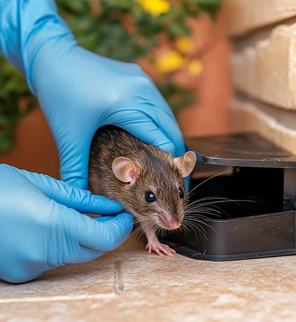

Sinais em casa
Fezes, barulho no forro, cheiro, fiação roída ou rato visto de noite.
Campo Bom · Vale dos Sinos · Serra Gaúcha
Empresa familiar desde 1986. Porta-iscas fechados com chave, equipe local e certificado de execução. Orçamento no WhatsApp.

Roedores contaminam alimentos, roem fiação e se espalham rápido por esgoto, telhado e paredes. Veneno solto e “chumbinho” colocam criança, pet e vizinho em risco — e quase nunca resolvem a colônia.
Fezes, barulho no forro, cheiro, fiação roída ou rato visto de noite.

Risco sanitário, perda de estoque e fiscalização. Precisa de método documentado.
Iscagem em porta-iscas fechados com chave, com abertura só para o roedor. Sem produto exposto no chão.
O produto fica dentro da estação, trancado. Crianças e pets não alcançam a isca.
Após o consumo, o roedor pode levar até 5 dias para ser eliminado. Esse intervalo existe para os demais da colônia também comerem a isca.
Conta os sinais, a cidade e se é casa ou empresa. Orçamento é personalizado.
A equipe identifica tocas, entradas e pontos de iscagem. Técnicos da Imunisinos, não franquia genérica.
Porta-iscas posicionados e orientações para vedar acessos depois do serviço.
Todo serviço inclui certificado de execução. Reincidência em 60 dias entra na assistência técnica.

Sócio-gestor · mais de 15 anos na operação.

Sócia-gestora · atendimento e gestão da empresa.
O produto fica dentro de porta-iscas fechados com chave, com abertura só para o roedor. Não use veneno solto por conta própria.
Pode levar até 5 dias após o consumo. Se morresse na hora, o restante da colônia evitaria o local e o problema continuaria.
Orçamento personalizado: depende do tamanho do imóvel e do grau de infestação. Chame no WhatsApp com a cidade e os sinais que você viu.
Assistência técnica de 60 dias. Infestação grande pode precisar de acompanhamento contínuo — aí o programa certo é o CIP.
Diz os sinais e a cidade. A equipe da Imunisinos monta o orçamento e agenda a visita.
Quero orçamento no WhatsApp